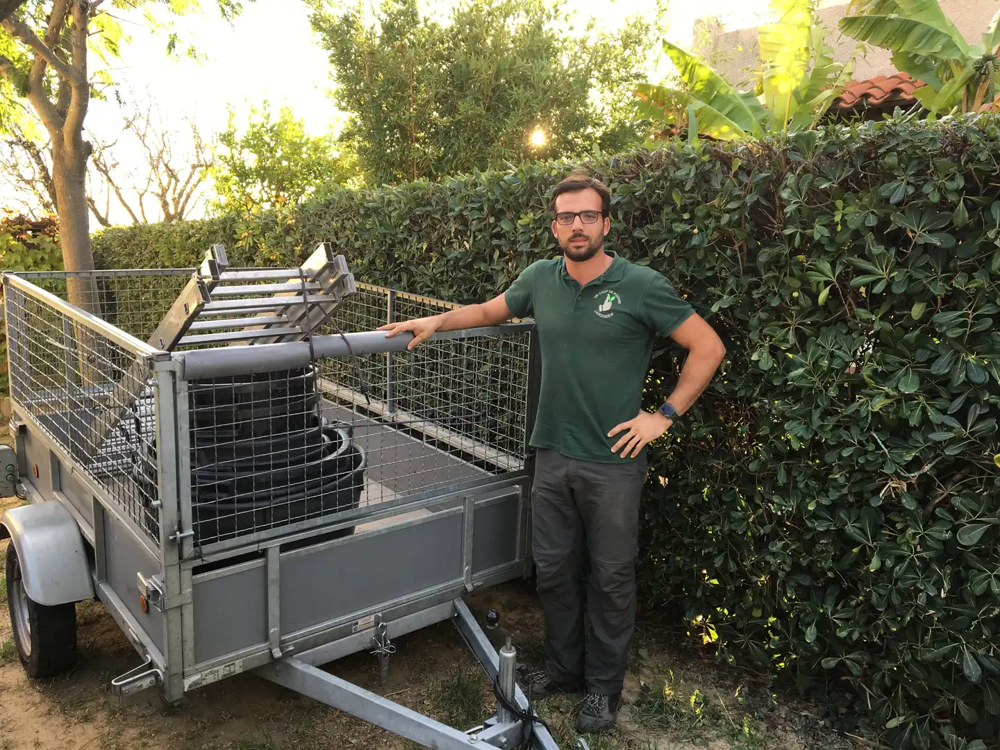
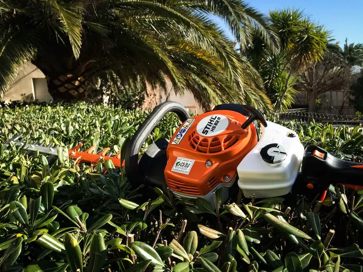
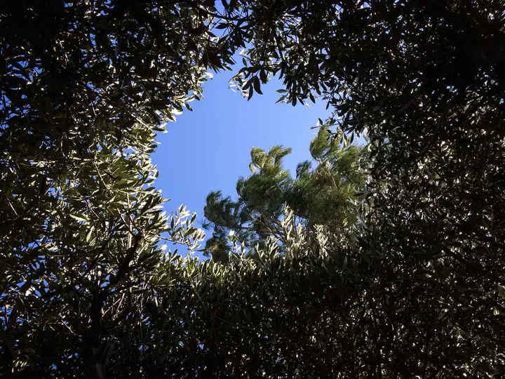
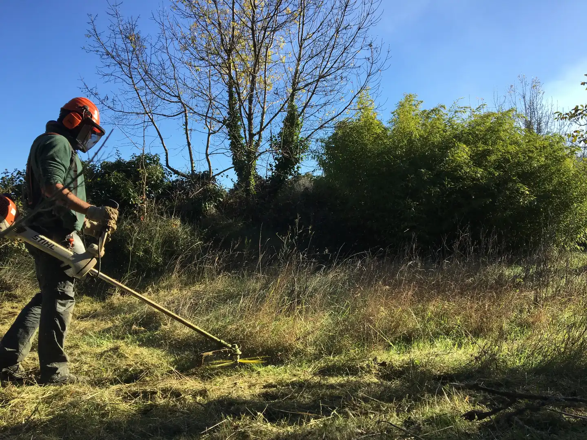
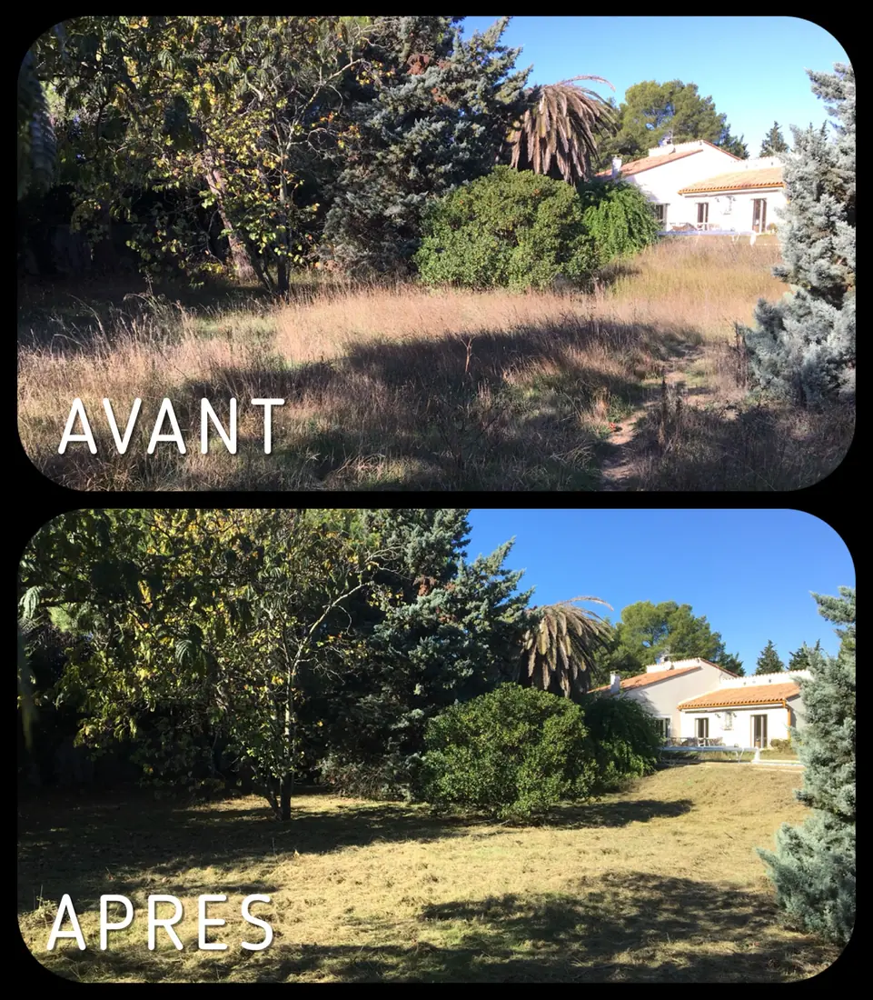

Lawn mowing
I can visit regularly to keep your lawn tidy.
View service (in French)Call Romain for help with garden maintenance in Perpignan and the surrounding area.

Contact me for more information or a quote.
I can visit regularly to keep your lawn tidy.
View service (in French)
If a hedge has grown too large on your property or near your neighbours, I can trim it for you.
View service (in French)I can clear leaves in autumn or tidy up an overgrown part of your garden.
View service (in French)
I can help with watering and advise on your garden’s water needs. Check your local water restrictions before watering.
View service (in French)
I advise you on which plants to choose and plant the ones you buy.
View service (in French)
I help your flowers and shrubs thrive and deal with plant diseases.
View service (in French)




Sometimes you may not have the time or energy to look after your garden. Un Coup de Pousse can lend a hand with outdoor work around your home.
Hedge trimming, lawn mowing and leaf removal can help you enjoy a well-maintained garden. I bring my own equipment and take the garden waste away.
I’ve worked as a gardener for 11 years, after nine years as a head grower at the greenhouses in Le Soler. I can help you care for your plants and flowers and choose plants that suit your soil.
Read gardening advice and the latest news from Un Coup de Pousse.